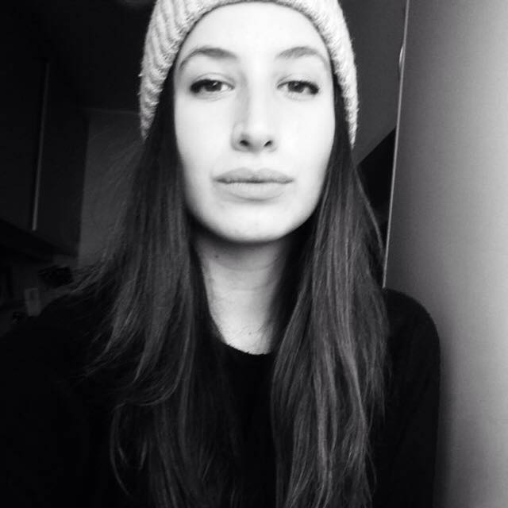

The Speculum Magazine
- Lens to filter the modern world -
Explore the latest advancements in science, biology, technology and more. Here at The Speculum Magazine we dedicate ourselves to update our readers of the newest discoveries and we delve into the freshest debates in science and ethics. Our readers will also benefit from an interactive work on layout and history of layout that will spice things up and allow them to become aware of the different tendencies in page layout that occurred during history. Furthermore, each issues is enriched by sections entirely devoted to metadata, that will give the interested reader additional information and will facilitate the comparison between articles.
The Issues
The magazine is organized into issues: each issue will explore a specific topic, covering it from different perspectives. We always try to offer the widest picture possible. We also offer additional tools that the reader can use to connect entities inside the texts and to further expand his or her knowledge.
Our lenses
The first wearable glasses known to history appeared in Italy in the late Middle Ages during the 13th century in the form of magnifying lenses for reading shaped like two small magnifying glasses and set into bone, metal, or leather mountings that could be balanced on the bridge of nose.
Throughout the XIX century and especially among aristocracy monocles were most prevalent. Eyeglasses weren’t considered an acceptable fashion statement because they carried connotations of one being old or a member of the clergy, therefore monocle accommodated the desire to make eyewear as inconspicuous as possible.
In the early twentieth century the choice was between spectacles or pince-nez, though over the years the perception of eyewear began to be strongly influenced by actors in motion pictures, the world of fashion and culture
In fact, in the second half of the XX century, especially in the 70s we start to see more fashionable glasses influenced by the fashion industry and a consequent demand for stylized eyewear. The seventies were indeed about making style statements and showing personality with bold glasses and quirky shapes.
90s...
Future
About the Speculum
We are born as a University project, specifically, as a team project for the 2020/21 course on Web Technologies with Professor Fabio Vitali. We are a dedicated and passionate team of amatorial editors: our mission is to shed light on some of the most interesting and controversial topic of the modern world, without forgetting a rigorous scientific approach. We believe in the power of knowledge to build responsible and engaged societies.
The concept
We chose the concepts of Speculum (a latin word for lens) and eyeglasses to be the symbols of our magazine. The glass allows one to focus, to magnify and amplify. That is exactly what we are trying to offer: a possibility to look deep into modern problems. As a design note: we matched our layout-changing icons to a specific pair of glasses, that recall the historic period under consideration.
The team
Alessandro Rosa
I hold a bachelor's and a MD degree in philosophy, both obtained at the University of Bologna. I am currently enrolled in the DHDK program and I am interested in data mining and in natural language processing.
I was responsible for the first mid XX century and the 2030 typographic style. I developed the whole Ajax infrastracture, in particular: the script that insert each issue with their relative metadata; the script that insert the articles and provide single or parallel visualization and the relative metadata for each article; the script that apply different typographical styles without reloding the page and I customized a JavaScript plugin for the documentation page. I also developed the whole website layout and the relative structural organization of each part, including the layout for the parallel visualization of the article withing their metadata boxes. Detailed information can be found at the documentation page.

Valentina Cozzi
I hold a bachelor’s degree in DAMS – Drama, Art and Music and I am currently attending the international master’s degree DHDK. I am interested in web technologies, the legal aspects of CH and the strategical and business-oriented approach of cultural industries.
I was responsible for the XIX century and the late 90s-early 2000s typographic style. the conceptual model and its graphical representation, parts of the data description and some specific parts of the RDF production and visualization.

Susanna Pinotti
I hold a bachelor's degree in Foreign Languages and cultures, and I'm currently attending DHDK. I am interested in computational linguistics, NLP and data science.
I was responsible for the creation of the E/R models, as well as the Theoretical model. As for the knowledge representation aspect, I took part in the RDF production.